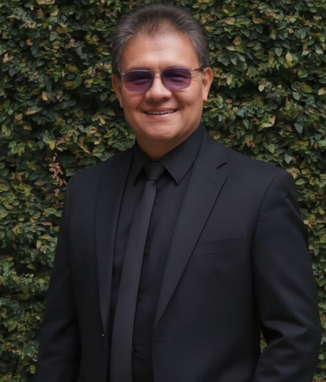

Comunicación y narrativas
Cine y literatura, estética, narrativa audiovisual, narrativas convergentes, laboratorio de medios y realización audiovisual.
Investigar, crear y narrar para comprender las relaciones entre las personas, los territorios y las formas contemporáneas de producir conocimiento.

NELSON F. OSORIO · INVESTIGACIÓN — CREACIÓNUna trayectoria en el encuentro entre academia, creación narrativa y comunicación situada.
Soy docente del Programa de Comunicación Social de la Universidad del Cauca, guionista, productor y realizador de medios audiovisuales e interactivos.
Mi trabajo se sitúa en el campo de la investigación-creación, donde exploro las relaciones entre comunicación, arte, educación y tecnologías digitales mediante la experimentación y la reflexión sobre los procesos creativos.
Desarrollo estrategias de comunicación multimodales y experiencias narrativas expandidas, transmedia e interactivas de carácter social, cultural y pedagógico, en diálogo con comunidades y territorios.
Docencia, investigación y formación en diálogo con las narrativas y las prácticas culturales.
Cine y literatura, estética, narrativa audiovisual, narrativas convergentes, laboratorio de medios y realización audiovisual.
Indagación desde la práctica artística, las narrativas interactivas, la memoria y las relaciones con los territorios.
Diseño de experiencias formativas, apropiación social del conocimiento y estrategias de comunicación para procesos colectivos.
Selección de procesos de investigación, realizaciones audiovisuales, publicaciones e intervención social.
Experiencia sobre historia y memoria urbana con serie documental de dos capítulos. Dirección, guion y edición.
Documental testimonial sobre la Mesa Nacional del Café de firmantes del Acuerdo de Paz. Dirección, guion y edición.
Estrategia vinculada con mecanismos de resolución de conflictos y fortalecimiento de sistemas locales de justicia.
Coordinación de componentes de intervención para fortalecer métodos de resolución de conflictos en Cauca y Valle del Cauca.
Trabajo académico con Ana Isabel Cerón en el ámbito de la Asociación Latinoamericana de Investigadores de la Comunicación.
Textos sobre Jacques Rancière y sobre la ética de la representación en Agarrando pueblo.
Investigación, creación narrativa, colaboración académica y proyectos de comunicación situados. Explora mis perfiles académicos para conocer más.